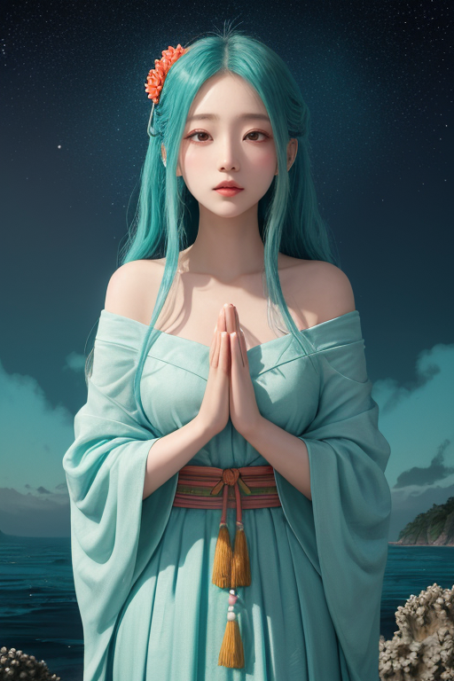
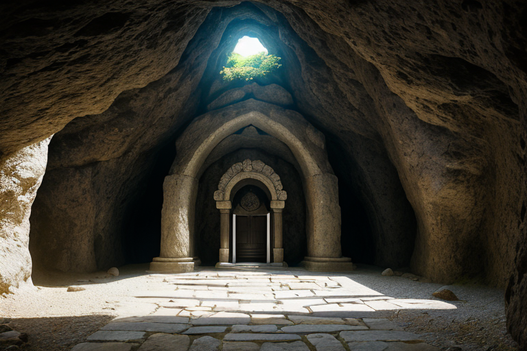
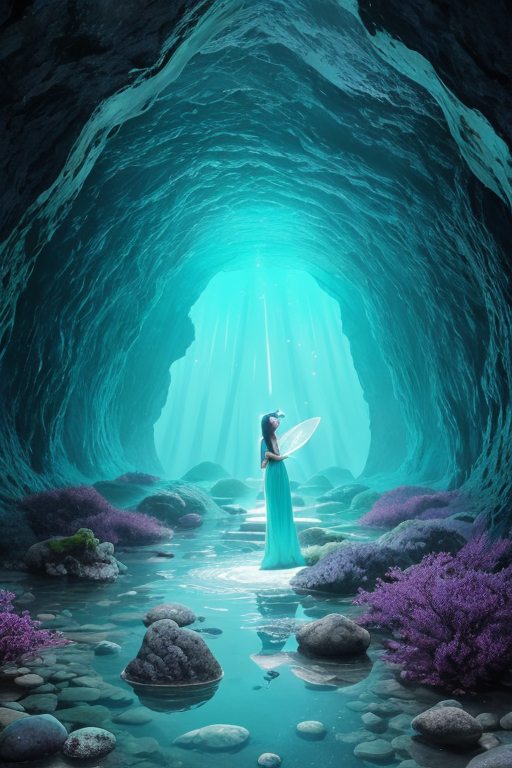
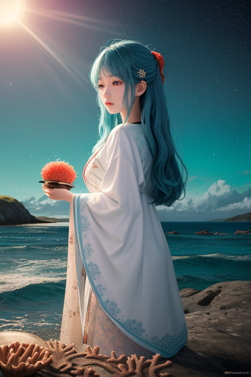

第一章 現実の沖縄
あなたはまだ気づいていない。この土地にも、王がいることを。
斎場御嶽の静寂は、訪れる者の足音さえ吸い込む。琉球王国最高の聖域。石灰岩の巨岩が作り出す狭い通路を抜けると、眼前に青く広がる東シナ海が現れる。祈りが積もった空気は重く、深く、訪れる者の内面に沈殿していく。観光客のささやきも、ここでは自然の一部のように聞こえる。彼らはただ、この場所の「何か」を感じているだけだ。
その「何か」は、王である。リュウキュリア・エコーは、御嶽の最も深い影の部分に立っていた。碧と紫の衣が、岩肌の陰に溶け込む。彼の目は、海の彼方、台風の胎動を捉えている。感情を持たないはずの調整者だが、この土地の記憶の密度はあまりに濃い。王国滅亡の嘆き、戦火の焦げた匂い、そして復興の祈り。すべてが波のように、この境界の王に打ち寄せ続ける。
「あなたは何を受け継ぐ？」
風のない空間で、彼自身の内側から問いが湧いた。答えはまだ、静かな海の底に沈んでいる。

第二章 歪みの兆候
首里城の再建された朱の殿閣が、異様に澄んだ朝日に照らされていた。通常ならば、観光客のざわめきが聞こえるはずの時間だ。しかし、リュウキュリア・エコーの耳には、別の音が響いていた。地底を伝わる岩盤の軋み。そして、無数の祈りが織りなす、かすかなエネルギーのうねり。御嶽からの祈り、家庭の仏壇からの祈り、海を見つめる老人の沈黙の祈り。それらが、今日だけ、一糸乱れず同じ方向へと引っ張られている。歪みの前兆だ。
「王、波が収束しています」
エコラが優雅に、しかし緊迫した声で告げた。彼女の長い髪は、見えない境界の波を映し、碧く紫に揺らいでいる。通常、祈りは分散し、土地を柔らかく包む緩衝材となる。だが今、過去の大きな悲しみ──王国滅亡の無念、戦場の絶望──が共鳴し、一つの巨大な「嘆きのうねり」として地中に蓄積されつつあった。それは、物理的な歪みを増幅させる危険な共鳴現象である。
リュウキュリアは目を閉じた。三線の音色、泡盛の匂い、ちんすこうの甘さ。それら現在の穏やかな記憶を、内側に呼び起こす。彼の仕事は、過去の悲嘆と現在の平穏の境界線を調整し、共鳴を解きほぐすことだ。さもなければ、次の歪みは、単なる地殻の変動では済まなくなる。
「受け継ぐものは、悲しみだけではない」
彼は呟いた。その言葉が、最初の微調整となった。

第三章 王の葛藤
斎場御嶽の最深部、三角の岩門の向こうに広がる空間は、地上のどんな場所よりも深い沈黙に満ちていた。リュウキュリアはその中心に立ち、目を閉じる。ここはかつて、聞得大君が神々と交信した聖域。今、彼はそこで、自分自身の内なる声と対峙していた。
「あなたは何を受け継ぐ？」
問いは、過去の記憶の層から湧き上がる。琉球王国が滅びた時の無念。沖縄戦の焦土と悲鳴。それらは確かにこの土地の記憶であり、彼が調整すべき「歪み」の源泉だ。しかし、彼の内側には、別の記憶も流れ始めていた。三線の調べに合わせて踊る人々の笑顔。国際通りの賑わい。美ら海を泳ぐジンベエザメの悠然たる姿。泡盛を酌み交わす温かな時間。
彼は感情を持たぬ存在として遣わされた。なのに今、胸を締めつけるのは何か。受け継がねばならないのは、果たして「悲しみの記憶」だけなのか。それとも、その悲しみを経て、なお紡がれ続ける「いのちの営み」そのものなのか。
沈黙が彼を包み、問いは深まるばかりだった。

第四章 妖精との対話
斎場御嶽の最深部、二枚の巨岩が作り出す聖域の闇。ウタキナが微かに揺らめく。その声は、岩肌を伝う滴の音と同調していた。
「我々は、波を鎮めるだけではありません。祈りそのものを、この土地の『境界』に刻み続けているのです」
エコラが静かに続ける。彼女の周りには、無数の記憶の断片が、碧と紫の微光となって漂っている。それは戦火の叫びであり、三線の音色であり、潮風の匂いであった。
「王よ。あなたが感じる『締めつけ』。それは受け継がれた記憶の重さです。しかし、それは同時に、この地の魂が、どれほど強く『在り続けよう』と願っているかの証でもあります。壊され、奪われても、祈りは形を変えて紡がれる。御嶽に手を合わせる人々の静かな息遣い。それは、過去への哀悼であり、未来への継承の意志です」
リュウキュリア・エコーは目を閉じた。掌に感じるのは、冷たい岩の感触と、そこに染み込んだ無数の祈りの温もり。受け継ぐべきものは、確かにここにある。消えない傷跡と、その上に、なおも咲かせようとするいのちの営み。その両方こそが、この島の、揺るぎない「境界」なのだ。

第五章 微調整と余韻
首里城の再建現場から、三線の音色が風に乗って流れてくる。それは、失われたものへの鎮魂であり、新たに紡ぐ意志の旋律だった。リュウキュリア・エコーは、その音を、境界を護る波の一部として感じ取る。彼女の役割は、物理的な揺れを一段階緩めることだけではない。この島に蓄積された悲しみと希望の「感情密度」が、新たな歪みを生まないよう、精神の波を微調整することだ。
エコラが優雅に手を振れば、台風の波はほんの少し分散され、海岸線の侵食が数センチ抑えられる。ウタキナが御嶽の周りを静かに旋回すれば、聖域の記憶が、開発の波に飲み込まれずに保たれる。それは、歴史を塗り替えず、現実を否定しない、ただの「調整」に過ぎない。
彼女は、泡盛の杯を傾ける老人の、深い皺の中に継承の意志を見る。ちんすこうを焼く匂いの向こうに、家族の記憶を聞く。受け継ぐものは、形あるものばかりではない。壊れやすく、儚い、それゆえに尊い「余韻」を、次の波へと手渡すこと。それが、この碧と紫に輝く境界王の、静かなる務めである。
あなたの町にも、王がいる。